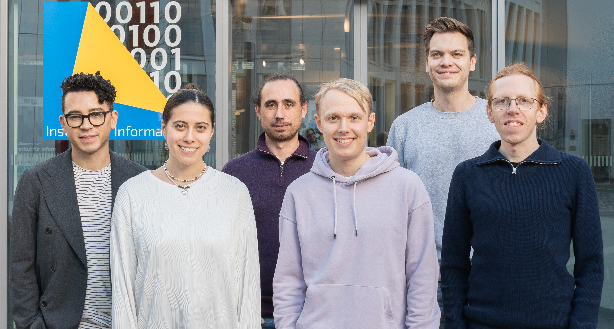

The FIM tutorial#
This tutorial gives a guided introduction to the FIM library and the models trained for the “Foundation Models for Inference” series of papers. The basic usage of this library is discussed together with a detailed documentation of the user interface, which consists of configuration files in the yaml format.
Afterwards the individual papers are shortly discussed by introducing motivating problems from different domains, which then are solved with the help of our trained models.
Note that if you are interested in training your own model the installation section contains a step by step description on how to build you training configuration file. If you are primarily interested in using our models you can safely skip to the chapter on the desired problem class after installing FIM.
About us#
The Deep Learning for Scientific Discovery (DL4SD) group of the Lamarr Institute is an interdisciplinary team of researchers working at the intersection of machine learning, statistical physics, and complexity science, to develop neural systems that automatically construct scientific hypotheses — articulated as mathematical models — to explain complex natural and social phenomena.
To achieve this overarching goal, we introduced Foundation Inference Models (FIMs)

About Foundation Inference Models (FIMs)#
FIMs are pre-trained neural recognition models that encode classical mathematical models commonly used in the natural and social sciences. Indeed, we define FIM that encode mathematical models which are simple enough to remain approximately valid across a wide range of observation scales, from microscopic to coarse-grained.
Neural networks encode information through data processing. We therefore leverage simulations of the mathematical models we seek to encode (that is, their approximate solutions), to connect the data representing these solutions with the corresponding equations. Once encoded into our neural networks, (the representations of) these mathematical models can be compared and combined by both humans and neural reasoners trained to construct novel scientific hypotheses directly from data.
Fundamentally, these pre-trained neural recognition models enable the zero-shot inference of (the parameters defining) the mathematical equations they encode directly from data.
Publications#
Previous work of our group consists of the following papers
Bibliography#
David Berghaus, Kostadin Cvejoski, Patrick Seifner, Cesar Ojeda, and Ramses J Sanchez. Foundation inference models for markov jump processes. In The Thirty-eighth Annual Conference on Neural Information Processing Systems. 2024. URL: https://openreview.net/forum?id=f4v7cmm5sC.
Patrick Seifner, Kostadin Cvejoski, Antonia Körner, and Ramses J Sanchez. Zero-shot imputation with foundation inference models for dynamical systems. 2025. URL: https://openreview.net/forum?id=NPSZ7V1CCY.